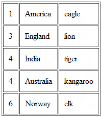

Mix and match
One of the most compelling things PHP has going for it is its support for a variety of database management systems, including MySQL, PostgreSQL, Oracle and Microsoft Access. By virtue of this support, PHP developers can create sophisticated data-driven Web applications at a fraction of the time and cost required by competing alternatives. And nowhere is this more clear than in PHP’s longtime support of MySQL, the very fast, very reliable and very feature-rich open-source RDBMS.
By using PHP and MySQL together, developers can benefit from huge savings on the licensing costs of commercial alternatives, and also leverage off the tremendous amount of thought PHP and MySQL developers have put into making sure that the two packages work together seamlessly and smoothly. And since both PHP and MySQL are open-source projects, when you use the two of them together you know you’re getting the most up-to-date technology available. And that’s always a good thought to go to bed with.
OK. Enough of the marketing talk. Let’s get down to business.
In this issue of PHP 101, I’m going to show you how to use PHP to extract data from a database, and use that data to dynamically build a Web page. In order to try out the examples in this tutorial, you’ll need a working MySQL installation, which you can obtain from the MySQL Web site. If you have some knowledge of SQL (Structured Query Language, the language used to interact with a database server) you’ll find it helpful, but it’s not essential.
Building blocks
In order to use MySQL and PHP together, your PHP build must include support for MySQL. On UNIX, this is accomplished by adding the --with-mysql option to the configure script when building PHP on UNIX, and pointing PHP to the MySQL client libraries. On Windows, the MySQL client libraries are built in to PHP 4 and activated by default. In PHP 5, pre-built .dll files are included with the Windows distribution. Read more about this at http://www.php.net/manual/en/ref.mysql.php.
Unix users should note that PHP 4 ships with a set of MySQL client libraries, which are activated by default; however, PHP 5 no longer bundles these libraries due to licensing issues, so you need to obtain, install and activate them yourself. They’re included with the MySQL distribution, and are installed automatically when you install MySQL. To activate the MySQL extension, ext/mysql, add the --with-mysql option to PHP’s configure script. For more information on this change, read http://www.php.net/manual/en/faq.databases.php#faq.databases.mysql.php5.
And finally (as if all that wasn’t quite confusing enough) PHP 5 also comes with a new MySQL extension, called ext/mysqli (MySQL Improved). You can use this new extension to access the new features in MySQL 4.1.2 or better, and to gain the benefits of improved speed and security. To activate this extension on UNIX, add the --with-mysqli option to PHP’s configure script, and point PHP to the mysql_config program that comes with MySQL 4.1 and above. For Windows users, a pre-built version of ext/mysqli is included in the win32 PHP distribution. Read more about this at http://www.php.net/manual/en/ref.mysqli.php.
To figure out which extension you need, use the following rule of thumb:
- If you need the new features in MySQL 4.1.2 or better, or if you’re using an older version of MySQL but still want to benefit from the speed/security improvements in the new extension, use ext/mysqli.
- If you don’t fall into either of the categories above, or don’t know what I’m talking about, use regular ext/mysql.
In case you were wondering, this tutorial covers both ext/mysql and ext/mysqli, so you actually get two for the price of one. Keep reading, and let me introduce you to MySQL.
Animal magnetism
Every MySQL database is composed of one or more tables. These tables, which structure data into rows and columns, are what lend organization to the data.
Here’s an example of what a typical table looks like:
+----+-----------+----------+ | id | country | animal | +----+-----------+----------+ | 1 | America | eagle | | 2 | China | dragon | | 3 | England | lion | | 4 | India | tiger | | 5 | Australia | kangaroo | | 6 | Norway | elk | +----+-----------+----------+
As you can see, a table divides data into rows, with a new entry (or record) on every row. The data in each row is further broken down into cells (or fields), each of which contains a value for a particular attribute of the data. For example, if you consider the record for the country “India”, you’ll see that the record is clearly divided into separate fields for record number, country name and national animal.
The rows within a table are not arranged in any particular order - they can be sorted alphabetically, by number, by name, or by any other criteria you choose to specify. It is therefore necessary to have some method of identifying a specific record in a table. In the example above, each record is identified by a unique number; this unique field is referred to as the primary key for that table.
You use the Structured Query Language, SQL, to interact with the MySQL server and tell it to create a table, mark a field as primary, insert records, edit records, retrieve records… basically, anything that involves manipulating the data or the database. To see how this works, examine the following SQL, which creates the table above:
{% highlight sql %} CREATE DATABASE testdb; CREATE TABLE `symbols` ( `id` int(11) NOT NULL auto_increment, `country` varchar(255) NOT NULL default '', `animal` varchar(255) NOT NULL default '', PRIMARY KEY (`id`) ) TYPE=MyISAM; INSERT INTO `symbols` VALUES (1, 'America', 'eagle'); INSERT INTO `symbols` VALUES (2, 'China', 'dragon'); INSERT INTO `symbols` VALUES (3, 'England', 'lion'); INSERT INTO `symbols` VALUES (4, 'India', 'tiger'); INSERT INTO `symbols` VALUES (5, 'Australia', 'kangaroo'); INSERT INTO `symbols` VALUES (6, 'Norway', 'elk'); {% endhighlight %}You can enter these commands either interactively or non-interactively through the MySQL commandline client program, which you run by navigating to the mysql/bin directory from your shell or DOS box and typing – with no ; because this is a shell command – either mysql, or mysql db_name if you want to choose an existing database to work with. Read http://dev.mysql.com/doc/mysql/en/mysql.html for more information on how to use the MySQL commandline client, and the tutorial at http://www.melonfire.com/community/columns/trog/article.php?id=39 to understand what each of the SQL commands above does. SQL is a lot like spoken English, so it won’t take you very long to pick it up. Just don’t try to turn those backticks into single quotation marks.
Once the data has been imported, run a quick SELECT query to check that everything is working as it should be:
mysql> SELECT * FROM `symbols`; +----+-----------+----------+ | id | country | animal | +----+-----------+----------+ | 1 | America | eagle | | 2 | China | dragon | | 3 | England | lion | | 4 | India | tiger | | 5 | Australia | kangaroo | | 6 | Norway | elk | +----+-----------+----------+ 6 rows in set (0.06 sec)
In English, the query above means “show me all the records from the table named symbols“. If you saw the same output as above, you’re good to go!
Hello database
Now, let’s use PHP to do exactly the same thing. You could use PHP to set up the database from the start, but as ours already exists we’ll simply fire a SELECT query at the database ‘testdb’, and display the results in an HTML page:
{% highlight php %} 0) { // yes // print them one after another echo "| ".$row[0]." | "; echo "" . $row[1]." | "; echo "".$row[2]." | "; echo "
Here’s what the result looks like:
As you can see, using PHP to get data from a database involves several steps, each of which is actually a pre-defined PHP function. Let’s dissect each step:
The first thing to do is specify some important information needed to establish a connection to the database server. This information includes the server name, the username and password required to gain access to it, and the name of the database to query. These values are all set up in regular PHP variables.
{% highlight php %}{% endhighlight %}To begin communication with a MySQL database server, you need to open a connection to that server. All communication between PHP and the database server takes place through this connection.
In order to initialize this connection, PHP offers the mysql_connect() function:
{% highlight php %}{% endhighlight %}All the parameters in mysql_connect()are optional, but there are three you will generally need to use anywhere beyond your own machine: the database server name, username and password. If the database server and the Web server are running on the same physical machine, you can use localhost as the database server name this is in fact the default value supplied by PHP.
mysql_connect() returns a “link identifier”, which is stored in the variable $connection. This identifier is used when communicating with the database.
Once you have a connection to the database, you must select a database for use with the mysql_select_db() function:
{% highlight php %}{% endhighlight %}This function must be passed the name of the database to be used for all subsequent queries. An optional second argument here is the link identifier; if no identifier is specified, the last opened link is assumed. If you have two or more database connections open simultaneously, it’s a good idea to specify the link identifier as the second argument to mysql_select_db() – and indeed to all other mysql_* functions in the script, so that PHP doesn’t get confused about which connection to use where.
The next step is to create the query and execute it. This is accomplished with the mysql_query() function.
{% highlight php %}{% endhighlight %}This function also needs two parameters: the query string and the link identifier for the connection. Again, if no link identifier is specified, the last opened link is used. Depending on whether or not the query was successful, the function returns true or false; a failure can be caught via the ...or die() clause of the statement, and the mysql_error() function can be used to display the corresponding error message.
If mysql_query() is successful, the result set returned by the query is stored in the variable $result. This result set may contain one or more rows or columns of data, depending on your query. You can retrieve specific subsets of the result set with different PHP functions, including the one used here – the mysql_fetch_row() function - which fetches a single row of data as an array called $row. Fields in that row can then be accessed using standard PHP array notation.
Each time you call mysql_fetch_row(), the next record in the result set is returned. This makes mysql_fetch_row() very suitable for use in a while() or for() loop.
{% highlight php %} 0) { while($row = mysql_fetch_row($result)) { echo "".$row[0]." "; echo "".$row[1]." "; echo "".$row[2]." "; } } ?>{% endhighlight %}Notice that the call to mysql_fetch_row() is wrapped in a conditional test, which first checks to see if any rows were returned at all. This information is provided by the mysql_num_rows() function, which contains the number of rows returned by the query. Obviously, you can only use this function with queries that return data, like SELECT or SHOW.It is not appropriate for use with INSERT, UPDATE, DELETE or similar queries.
There are several other alternatives to mysql_fetch_row(), which will be explained a little later.
Finally, since each result set returned after a query occupies memory, it’s a good idea to use the mysql_free_result() function to free up the used memory. After the result set is freed, if no further queries are to be run, you can close the connection to the MySQL server with mysql_close().
{% highlight php %}{% endhighlight %}
Different strokes...
You can also use PHP’s mysql_fetch_row() and list() functions to obtain a simple array of values, and then assign these values to different variables – a variation of the technique in the previous section. Take a look (only the while() loop changes):
{% highlight php %} 0) { // yes // print them one after another echo "| $id | "; echo "$country | "; echo "$animal | "; echo "
In this case, the list() function is used to assign different elements of the result set to PHP variables, which are then used when rendering the page.
You can use PHP’s mysql_fetch_assoc() function to represent each row as an associative array of field-value pairs – a minor variation of the technique used above:
{% highlight php %} 0) { // yes // print them one after another echo "| ".$row['id']." | "; echo "".$row['country']." | "; echo "".$row['animal']." | "; echo "
Notice that in this case, field values are accessed using the field name instead of the index.
Of all the alternatives, however, the function I like the most is the mysql_fetch_object() function, which returns each row as an object (remember them from Part Seven?) with properties corresponding to the field names:
{% highlight php %} 0) { // yes // print them one after another echo "| ".$row->id." | "; echo "".$row->country." | "; echo "".$row->animal." | "; echo "
Here, each $row object is created with properties corresponding to the field names in that row. Row values can thus be accessed using standard object->property notation.
If you’re the type that likes to have your cake and eat it too, you will probably enjoy the mysql_fetch_array() function, which returns both an associative array and a numerically-indexed array, a combination of the mysql_fetch_row() and mysql_fetch_assoc() functions. Read about it at http://www.php.net/manual/en/function.mysql-fetch-array.php.
... for different folks
If you’re using PHP 5, you can do the same thing using the new ext/mysqli extension, which offers a number of new features. This extension can be used in two ways: procedural (using functions), and object-oriented (using class methods and properties). Consider the next script, which uses ext/mysqli in a procedural manner:
{% highlight php %} 0) { // yes // print them one after another echo "| ".$row[0]." | "; echo "".$row[1]." | "; echo "".$row[2]." | "; echo "
As you can see, this looks a lot like the code written for ext/mysql. The only real difference – at least to the naked eye - is the fact that function names now begin with mysqli_* instead of mysql_*. Of course, there are a whole bunch of differences under the hood: ext/mysqli is faster, more secure and more powerful than regular ext/mysql, and also includes support for prepared statements, bound result sets, multiple simultaneous queries, transactions and a whole bunch of other cool stuff.
You can also use ext/mysqli in an object-oriented way, where each task – connecting, querying, fetching – is actually a method of the mysqli() object:
{% highlight php %} query($query)) { // see if any rows were returned if ($result->num_rows > 0) { // yes // print them one after another echo "| ".$row[0]." | "; echo "".$row[1]." | "; echo "".$row[2]." | "; echo "
Here, the new keyword is used to instantiate an object of class mysqli, and pass the object constructor connection information (including the database name). The resulting object, stored in the variable $mysqli, then exposes methods and properties to perform the tasks of querying, fetching and processing rows, and handling errors.
If you look closely at the two scripts above, you’ll notice the numerous similarities between the function and method names, and the structure of the script. Of the two, though, the object-oriented method is recommended, especially in light of the new object model in PHP 5.
A couple of other important differences to keep in mind:
- With ext/mysqli, you can include the database name in the arguments passed to the mysqli_connect() function or to the mysqli()constructor.
- When calling mysqli_query() or the mysqli object’s query() method, the link identifier is mandatory, not optional.
Surgical insertion
So now you know how to execute a SELECT query to retrieve a result set from the database. However, you can also use PHP’s MySQL API for queries that don’t return a result set – for example, an INSERT or UPDATE query. Consider the following example, which demonstrates this by asking for user input through a form and then INSERT-ing that data into the database:
{% highlight php %} {% endhighlight %}Here, the user is first presented with a form asking for a country and its national animal.
Once the form is submitted, the form input is used inside to create an INSERT query, which is then sent to the database with the mysql_query() method. Since mysql_query() returns a Boolean value indicating whether the query was successful or not, it is possible to check whether the INSERT took place and return an appropriate message:
New record inserted with ID 8
There are two new functions in the example above. The mysql_escape_string() function escapes special characters (like quotes) in the user input so that it can be safely entered into the database; while the mysql_insert_id() returns the ID generated by the previous INSERT query (useful only if the table into which the INSERT occurs contains an AUTO_INCREMENT field). Both these functions are also available in ext/mysqli.
Wiping out
Obviously, you can also do the same thing with other data manipulation statements. This next example demonstrates how to use a DELETE statement with PHP to selectively delete items from the table. For variety, I’m going to use ext/mysqli this time around:
{% highlight php %} query($query)) { // print number of affected rows echo $mysqli->affected_rows." row(s) affected"; } else { // print error message echo "Error in query: $query. ".$mysqli->error; } } // query to get records $query = "SELECT * FROM symbols"; // execute query if ($result = $mysqli->query($query)) { // see if any rows were returned if ($result->num_rows > 0) { // yes // print them one after another echo "| ".$row[0]." | "; echo "".$row[1]." | "; echo "".$row[2]." | "; echo "Delete | "; echo "